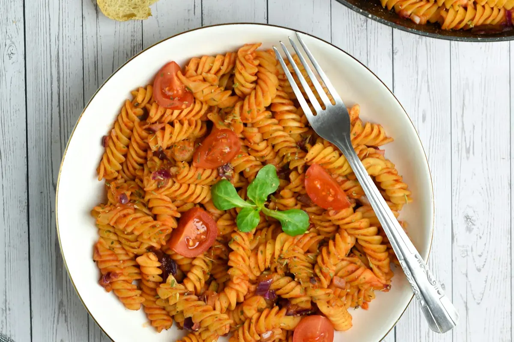

Grocery Shopping on a Budget Without Eating Badly

The cheapest way to eat well is not to buy the cheapest things. It is to buy ingredients you will finish, in quantities you can use, with a plan for the leftovers.
Price per meal, not price per item
A cheap ingredient that only makes one dish is expensive. A slightly pricier bag of rice that covers eight meals is cheap. The useful comparison is cost per portion of something you will actually eat, and that number includes the part of the bag that ends up in the bin.
This is why the budget conversation starts with waste rather than with brands. In most homes the biggest saving available is not switching to a cheaper shop, it is buying less of the food that gets thrown away, which is usually fresh produce bought optimistically on a Sunday.
The proteins that stretch
Eggs, tinned beans and chickpeas, dried lentils, and whole chickens are the cheapest protein per portion in most shops, and none of them require skill to cook well. A whole chicken gives a roast dinner, meat for two more meals, and a pot of stock that becomes soup.
Cheaper cuts of meat reward slow cooking: shoulder, shin, thigh, belly. They cost less than the quick-cooking cuts and taste better after an hour in a low oven, which is also a hands-off hour. Buying mince at a higher fat percentage is cheaper and browns better than lean.
Stretching meat is the oldest trick in the book and still the most effective. A pound of mince with a tin of lentils or a chopped aubergine feeds four instead of two, and nobody notices the meat is missing because the dish has more texture and more flavour. The same applies to a chicken thigh curry with potatoes.
Vegetables that go further
Cabbage, carrots, onions, potatoes, squash and frozen peas cover a huge amount of cooking and keep for weeks. Cabbage in particular is undervalued: raw in a slaw, roasted in wedges, or wilted in a pan, it feeds four from a fraction of a head.
Frozen vegetables are not a compromise. They are frozen within hours of picking, so out of season they are often better than the fresh equivalent, and they do not rot in the drawer. Frozen spinach, peas and sweetcorn are worth keeping permanently.
Buy for the week you will actually have
Most shopping goes wrong because it is done for an ideal week. Buying for the real one means knowing which nights you will cook, which nights you will not, and what you already have. A quick look in the fridge before leaving the house prevents most of the duplication.
Plan three or four dinners rather than seven. Leave the rest for leftovers, eggs, toast or whatever the plan turns into midweek. A rigid plan that collapses on Wednesday has usually already wasted the food bought for Thursday and Friday.
Keep a running list somewhere everyone can see, and write things on it as they run out rather than trying to remember at the shop. The list is not a budget tool so much as a memory aid, and it prevents the two most common wastes: buying a second jar of something already open, and forgetting the one ingredient the plan depended on.
Where the money actually goes
Drinks, snacks, and bought lunches usually cost more than the ingredients for dinner do, and they are the first place to look if the total needs to come down. The second is convenience packaging: pre-cut vegetables, pre-grated cheese and ready-made sauces charge a large premium for a few minutes of work.
Spices, oils and store-cupboard basics are worth buying properly, because they are used constantly and the cheap versions taste of nothing. Fresh herbs, expensive cuts and out-of-season produce are the things to skip when the budget is tight.
Shop the reduced section with a plan rather than hope. A marked-down joint is only a bargain if you know what you are doing with it that evening or have room in the freezer. Buying it because it is cheap and then not cooking it is the most expensive outcome available.
Making the leftovers work
A roast chicken becomes sandwiches, then a soup from the carcass. A pot of beans becomes a bowl, then a mash on toast, then a pasta sauce. Half a cabbage becomes a slaw, then a stir-fry. Cooking once and eating twice is the most reliable saving in the kitchen, and it also cuts the weeknight effort in half.
Write down what worked. Six weeks of shopping lists that produced meals you liked is a better system than any app, because it is built on what your household actually eats rather than on what looks good in a photograph.
A cheap meal template that always works
Most inexpensive dinners follow the same shape: a cheap starch, a cheap protein, a vegetable, and something sharp or spicy on top. Rice with beans and cabbage with a spoonful of chili oil. Pasta with eggs and greens with lemon and pepper. Potatoes with lentils and a yogurt sauce.
Once you can see the template, the shopping writes itself and the cost per portion stays low without the meals repeating. The sauce at the end is what changes the dish, and a jar of something sharp in the fridge is cheaper than any takeaway.
Written by Kent B Williams for Hearth & Harvest. Questions or corrections are welcome at the contact page.